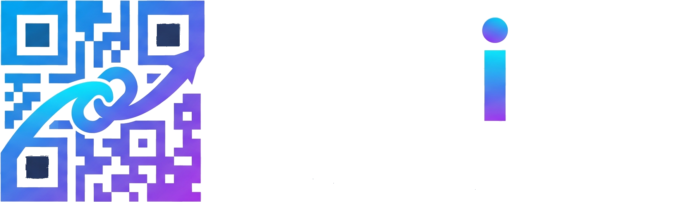

주소를 입력하고 확인을 누르면 정중앙에 고화질 QR코드가 즉시 생성됩니다.
QR코드를 직접 클릭하면 1024×1024 고화질 JPG로 저장됩니다
주소창에 naver.com처럼 입력해도 자동으로 https:// 프로토콜을 안전하게 연결합니다.
naver.com
https://
확인을 누르면 입력창이 화면 하단으로 내려가 언제든지 URL을 수정하거나 새로 생성할 수 있습니다.
화면 중앙의 QR코드를 클릭하면 선명한 고해상도(1024×1024) JPG 파일로 즉시 저장됩니다.